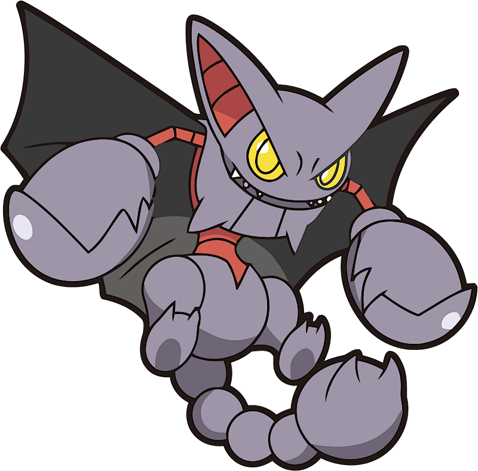
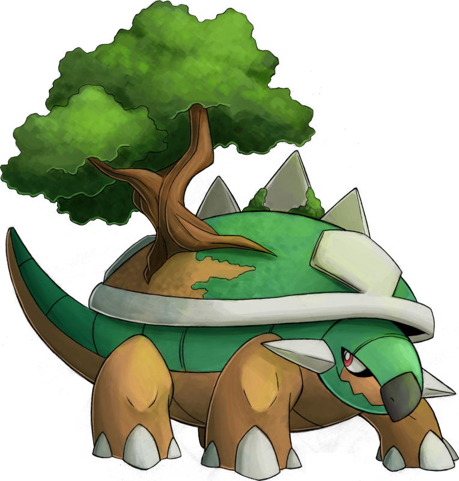

#1 Gliscor
Gliscor is another recent climber. I never got to catch one until Legends: Arceus. But, once I did it was an eye opener! The Ground/Flying type combo is amazing! But even more than that, it looks cool! It's like a scorpion with vampire bat mixed in. That's dope!
#2 Garchomp
This true beast used to be #1 on my Ground list, and for good reason! This is the ace Pokèmon of the greatest and strongest champion in this entire franchise. Powerful, fast, bulking. Truely terrifying in every regard. Having a Garchomp on your team puts anyone on the fast track of victory.

#3 Groudon
The continent shaper. The drought bringer. Ocean's bane. My second favorite legendary. The coloring is emaculate. It looks like it would be a champion level Digimon if Sandshrew was a Digimon. It looks powerful. It's gigantic. It is described as the bane of oceans even though it has a weakness to water. I love it.

#4 Torterra
My first ever starter. Even though it's primarily a Grass type, I like it more as a ground type. It's a tortoise with a mini island on it's back and that's cool! It's bulky and tough. It has the bearing of a creature you couldn't even scratch. The Detective Pikachu movie brought this Pokèmon back to the forfront for me.
#5 Claydol
Claydol is an interesting Pokèmon. It has the look of a guardian. Something left in ruins or temples to watch for intruders. This Pokèmon doesn't have much raw physical power, but it's special attack is very potent and is always a great addition to a team.